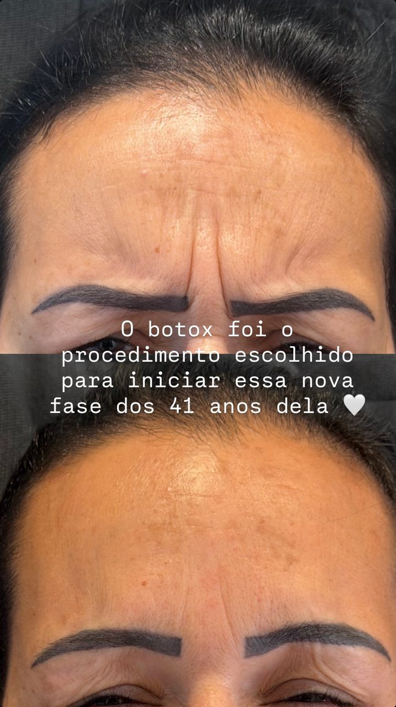
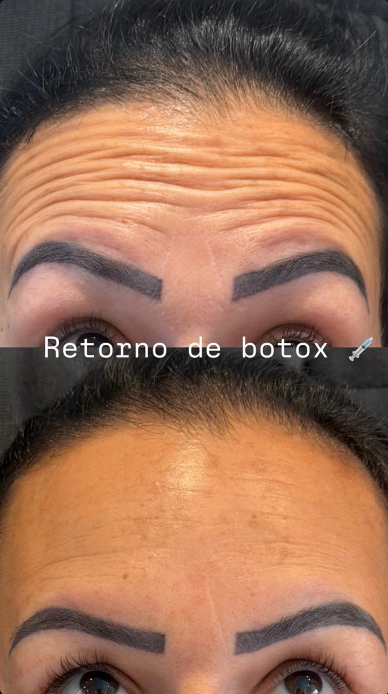
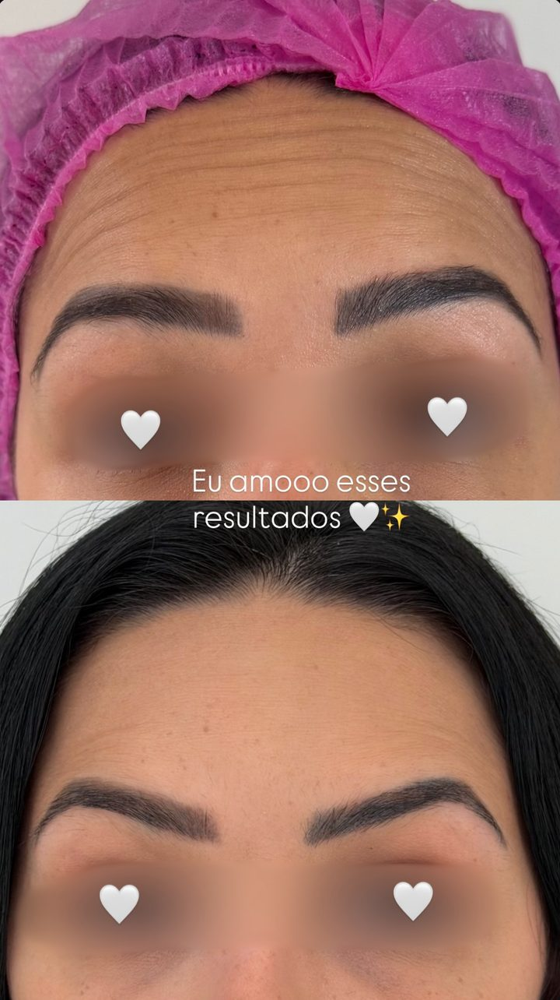
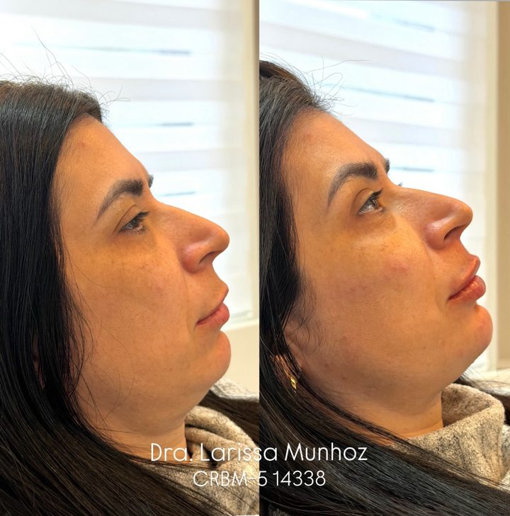
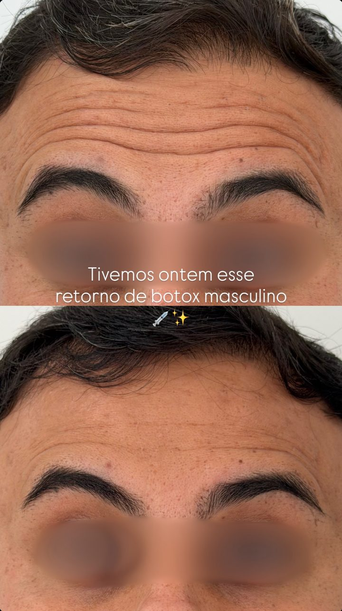
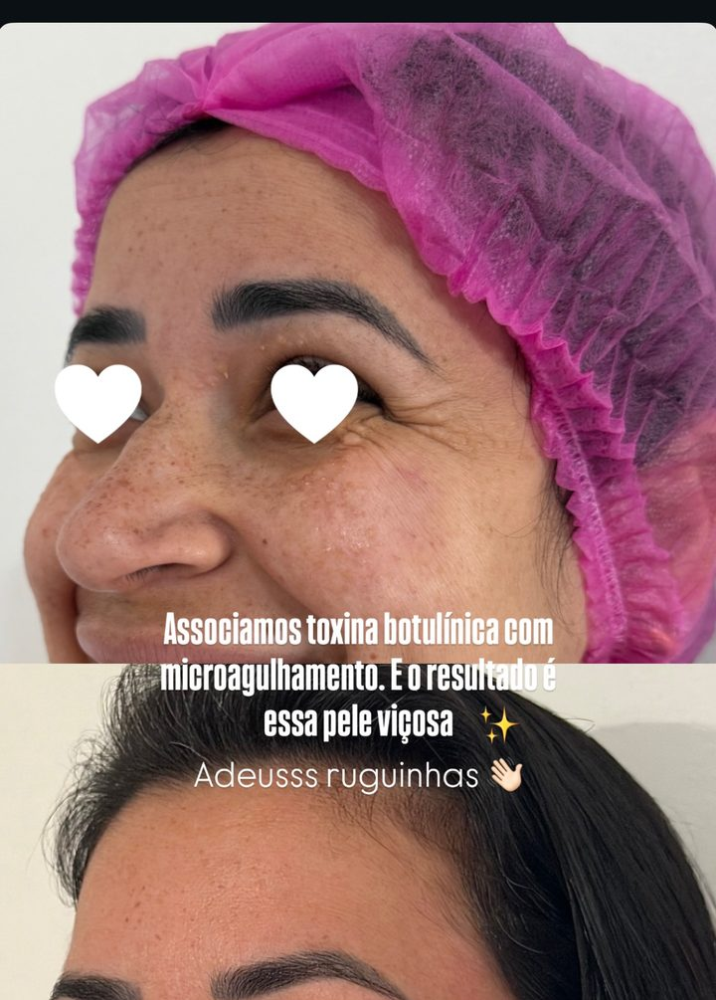
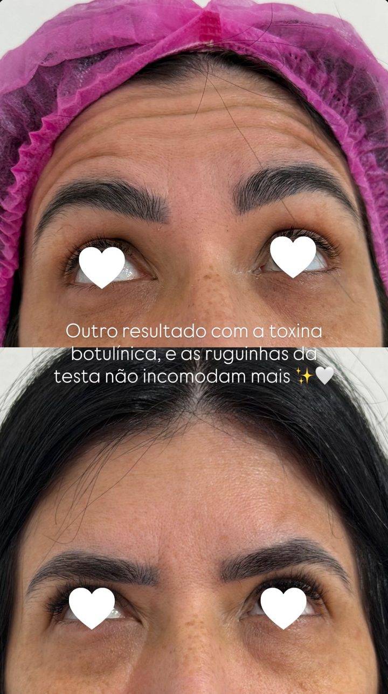
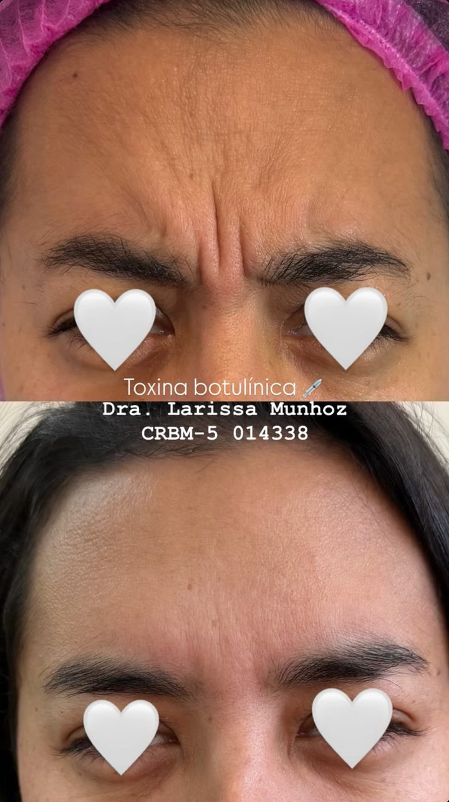

Dra. Larissa Munhoz
Biomedicina Estética e Tricologia
CRBM-5 14338
Beleza com propósito.
Estética com ciência e afeto
Acredito numa beleza que respeita quem você é.
Sou biomédica esteta, pós-graduada em Tricologia e Tratamentos Capilares, e sócia-fundadora do ORA Coworking de Saúde, em Porto Alegre. Meu trabalho une conhecimento científico, técnica e um olhar atento para cada pessoa: antes de qualquer procedimento, escuto, avalio e explico, para que você se sinta segura em cada etapa.
O objetivo é sempre o mesmo: realçar a sua beleza natural, com segurança, naturalidade e propósito.
Meus pilares
Procedimentos
Cada protocolo é indicado depois de uma avaliação individual. Toque no procedimento para conversar comigo pelo WhatsApp.
Toxina botulínica
Suavização de rugas e linhas de expressão da testa, entre as sobrancelhas e ao redor dos olhos, com naturalidade. Também para o público masculino.
Quero saber mais →Microagulhamento
Estímulo de colágeno para viço, textura, poros e cicatrizes. Pode ser associado à toxina para potencializar o resultado.
Quero saber mais →Preenchimento com ácido hialurônico
Contorno, volume e hidratação com harmonia e proporção.
Quero saber mais →Mesoterapia capilar
Ativos aplicados diretamente no couro cabeludo para fortalecer os fios e estimular o crescimento.
Quero saber mais →Tratamento da queda de cabelo
Avaliação tricológica para entender a causa da queda e montar o protocolo certo para você.
Quero saber mais →Falhas na barba e no cabelo
Protocolos para preencher falhas e estimular o crescimento dos fios da barba e do couro cabeludo.
Quero saber mais →Os resultados variam de pessoa para pessoa. A indicação de cada procedimento é feita apenas após avaliação.
Cuidado para os seus fios
Cair muito cabelo a cada lavagem não é normal.
A tricologia estuda o couro cabeludo e os fios. Com uma avaliação cuidadosa, investigo a causa da queda, das falhas e do enfraquecimento, e indico o tratamento ideal: mesoterapia capilar, protocolos para falhas no cabelo e na barba, e acompanhamento da evolução mês a mês.
- Queda de cabelo
- Falhas no couro cabeludo
- Falhas na barba
- Fios finos e enfraquecidos
Resultados reais
Alguns resultados das minhas pacientes e dos meus pacientes, compartilhados com autorização.








Os resultados variam de pessoa para pessoa e dependem de avaliação individual.
Como funciona
- i.
Avaliação
Conversamos sobre seus objetivos, histórico e rotina de cuidados.
- ii.
Plano personalizado
Você recebe a indicação dos protocolos ideais para a sua pele.
- iii.
Procedimento
Realizado com técnica, biossegurança e todo o conforto.
- iv.
Acompanhamento
Orientações de cuidados e retorno para acompanhar sua evolução.
ORA Coworking de Saúde
R. Cel. Aparício Borges, 250 · Teresópolis
Porto Alegre/RS
Com hora marcada
- 1Recepção no 3º andar. Identifique-se com um documento.
- 2Suba para o 8º andar, sala 803.
- 3Estacionamento no próprio shopping.
Sua beleza, respeitada em cada detalhe.
Agende sua avaliação e descubra o cuidado ideal para você.
Agendar pelo WhatsAppWhatsApp (51) 99227-4927